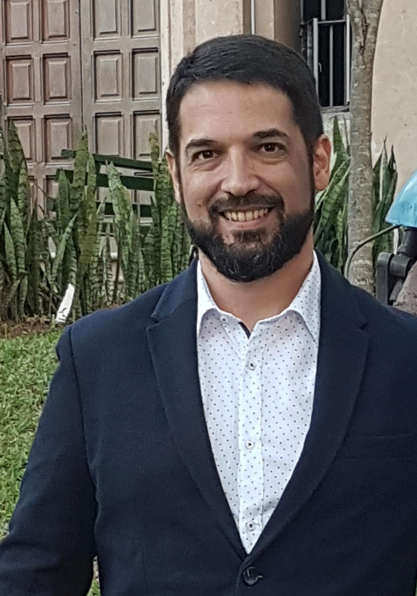

Informacion Personal  Perfil Como profesional de la informatica siempre busco ponerme al dia con los avances de la tecnologia. Busco los detalles que hagan la difrencia dentro de mis aplicaciones, lo que me haga distinto y original, ya que el mercado en el que trabajo tiene mucha competencia hoy en dia. Tambien busco siempre que el usuario final quede satisfecho con la accesibilidad del sistema que le he desarrollado. Despues de todo, son ellos los que determinan si mi trabajo vale o no la pena. Si bien ya estoy un poco mayor, llegando a mis 42 años, no dejo de aprender; el perfeccionamiento de mis habilidades es lo que me hace un competidor fuerte en el mercado. Mi trabajo principal esta orientado a la contabilidad; lo que me convierte en una persona muy detallista. El minimo error en una linea de codigo puede causar un infrome desastrozo; por eso me dedico a revisar casi diariamente el codigo para corregir posibles errores en el mismo. Trato de manejarme en los mercados de mayor demanda en la zona donde trabajo, por lo que he estudiado tres idiomas a parte del castellano, ellos son: Inlges Portugues Guarani